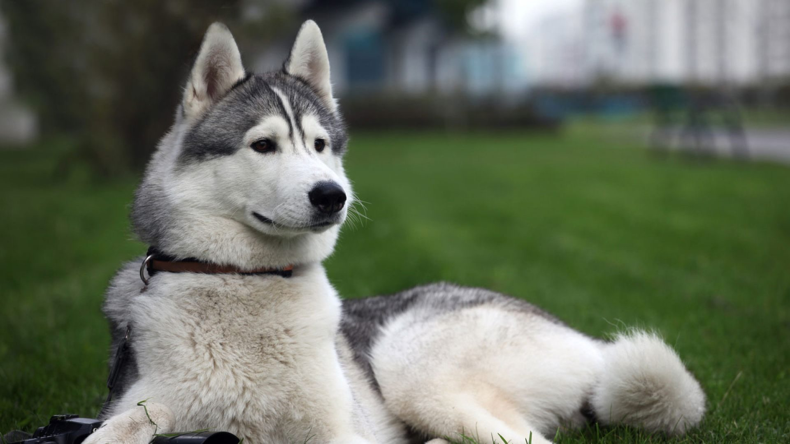

Gatos en busca de hogar
Hasta el más pequeño de todos los gatos es una obra maestra.

Todo los gatos que acogemos reciben la debida atencion veterinaria (analiticas, tratamientos, cirugias, etc) y son identificados y esterilizados antes de emprender la busqueda de adoptantes comprometidos a proporcionarles a una vida sana y feliz.
Perros en busca de hogar
Un perro es la única cosa en la tierra que te amara más de lo que tú te amas a ti mismo.

Todo los perros que acogemos reciben la debida atencion veterinaria (analiticas, tratamientos, cirugias, etc) y son identificados y esterilizados antes de emprender la busqueda de adoptantes comprometidos a proporcionarles a una vida sana y feliz.
!Conocenos¡

Somos una organizacion sin fines de lucro que formenta la tenedncia y adopcion hacia los animales en situacion de calle. Rescatamos, rehabilitamos y reubicamos perros y gatos abandonados en hogares comprometidos y que los consideren un miembro mas de la familia.
Integrantes
Nicolas Alvarado
Salvador Mondaca
Sadrach
Cuevas